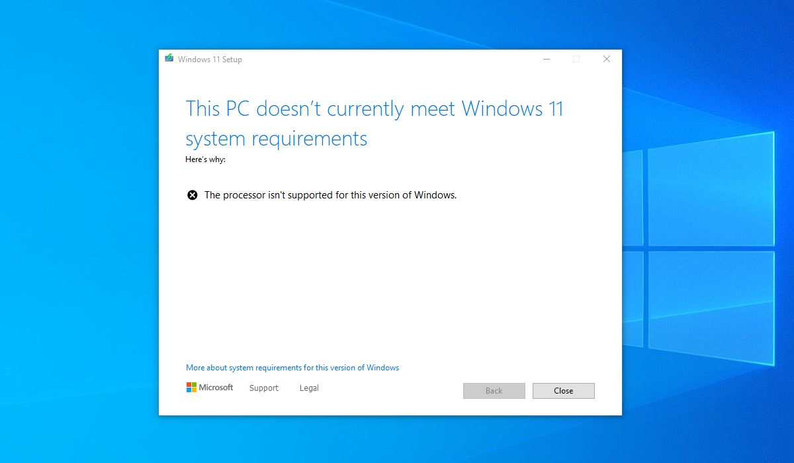
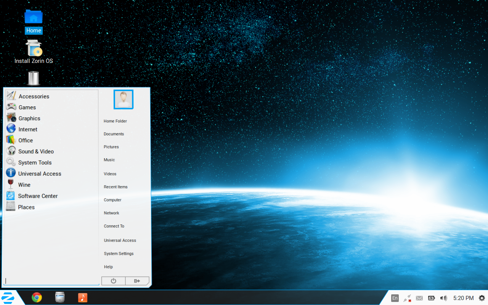
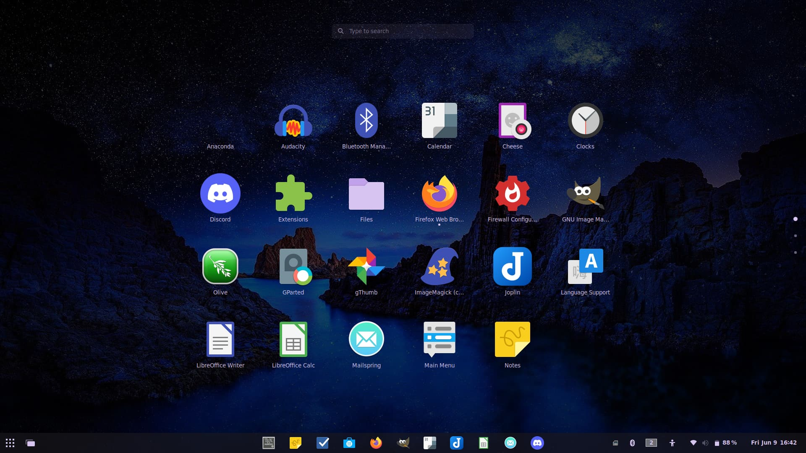

<!doctype html>
<meta charset="utf-8">
<meta name="viewport" content="width=device-width,initial-scale=1">
<title>PC • Mac • Back 2 Life</title>
<style>
  :root{--bg:#0b1220;--text:#e5e7eb;--muted:#9ca3af;--brand:#22d3ee;--radius:18px;--maxw:1080px}
  body{margin:0;background:var(--bg);color:var(--text);font:16px/1.6 system-ui,-apple-system,Segoe UI,Roboto,Inter,Arial,sans-serif}
  .wrap{max-width:var(--maxw);margin:0 auto;padding:24px}
  header{position:sticky;top:0;background:rgba(16,24,39,.85);backdrop-filter:blur(6px);border-bottom:1px solid rgba(255,255,255,.08)}
  .hero{display:grid;place-items:center;text-align:center;padding:28px 0}
  .title{font-size:clamp(28px,4.2vw,48px);margin:0 0 12px 0}
  .kicker{color:var(--muted)}
  .card{background:linear-gradient(180deg,rgba(255,255,255,.05),rgba(255,255,255,.02));border:1px solid rgba(255,255,255,.08);border-radius:var(--radius);padding:24px;margin:24px 0}
  img{max-width:100%;height:auto;display:block}
  .grid{display:grid;gap:16px}
  @media(min-width:880px){.grid{grid-template-columns:repeat(4,1fr)}}
</style>

<header><div class="wrap">
  <div class="hero">
    <h1 class="title">PC • Mac • Back 2 Life</h1>
    <p class="kicker">Zorin OS installs, data migration, and Plex setup.</p>
  </div>
</div></header>

<main class="wrap">
  <section id="screens" class="card">
    <h2>Screenshots</h2>
    <div class="grid">
      
      
      
      
    </div>
  </section>

  <section id="services" class="card">
    <h2>Services</h2>
    <ul>
      <li>Zorin OS install & tuning</li>
      <li>Data migration</li>
      <li>Plex setup</li>
    </ul>
  </section>
</main>
